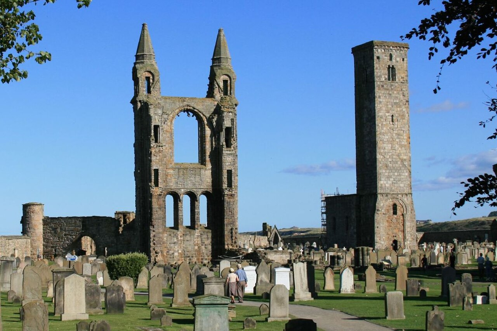

🗺️ Abrir circuito del día en Google Maps → · Strathtyrum → ruinas → cena. La opcional a Kingsbarns Distillery está al final.
La premisa del día
Daniela y Matías juegan juntos 18 hoyos en Strathtyrum Course dentro del St Andrews Links Trust — el complejo de 7 campos de golf más histórico del mundo. Daniela es la más golfista de los dos. Tee time 10:50. Después de la vuelta: almuerzo tardío, recorrida juntos por St Andrews Cathedral ruins, St Andrews Castle y la University of St Andrews, y a la noche la cena romántica #2 en el Seafood Ristorante con ventanal sobre el mar.
Itinerario
07:30 Despertar. Desayuno con calma. Hidratar + electrolitos suaves (4h en el course al sol con bolsa son más exigentes de lo que parece).
09:15 Salida al St Andrews Links Clubhouse golf. Caminata de 10-15 min desde el aparthotel. Llegar 30-45 min antes del tee time para check-in en pro shop, alquiler de palos/carros si no llevaron, calentar putts en el green de práctica.
10:50 TEE TIME EN STRATHTYRUM — los dos golf. Course de 18 hoyos, par 69, 5.620 yardas (más corto que el Old Course pero mismo terreno). Linkland clásico: arena, vientos del Mar del Norte, fairways generosos para handicaps medios. £40-65 por persona según temporada. Tiempo total estimado 4 horas.
Cosas a saber:
- Reglas locales: están todos los detalles del links (bunkers profundos, viento, hard greens). Caddies opcionales (£60-80/round si quieren uno).
- Refrescos: hay un buggy de bebidas en el course.
- Tradición: meterse en el bunker es parte del rito. No se pasen al lado del Hell Bunker — eso es del Old Course, pero hay bunkers feos en Strathtyrum también.
- Photo op: el Swilcan Bridge (foto clásica) está en el Old Course al lado, se puede pasar a sacar fotos antes o después.
- Daniela manda el ritmo — corre rápido pero juega más golf que Matías. Probablemente vaya a ir guiando la ronda.
Wikipedia sobre St Andrews Links · Video flyover del course.
~15:00-15:30 Fin del round. Vuelven al clubhouse, ducha rápida (hay vestuarios para visitantes), drink en el clubhouse bar mirando al Old Course. Almuerzo tardío en The Adamson (127 South Street): cocina bistrot moderna, ambiente lindo, ~£18 plato. Sitio.
16:30 Tour por las ruinas medievales y el centro museo. Si quedan piernas:
- St Andrews Cathedral ruins + St Rule’s Tower. £9 (combo castillo £15). Ruinas de la catedral más grande de Escocia, consagrada 1318. Saqueada en la Reforma Protestante (1559). La St Rule’s Tower (s. XII) se sube, vista 360° del pueblo. Wikipedia.
- St Andrews Castle. £9. Bottle Dungeon + Mine/Counter-Mine del sitio de 1546.
- University of St Andrews: St Salvator’s Quad, capilla de 1450. Los pavimentos PH (marcan donde quemaron a Patrick Hamilton en 1528) — los estudiantes los esquivan supersticiosamente.
- R&A World Golf Museum (alt) museo: si prefieren más golf, £10, junto al Clubhouse. Sitio.
18:00 Vuelta al aparthotel. Ducha, descanso, vestirse para la cena.
19:30 Cena ROMÁNTICA #2 — The Seafood Ristorante romantico (Bruce Embankment, al borde del agua, en una caja de vidrio sobre la playa). Reservado. La cosa más romántica de St Andrews:
- Cubo de vidrio sobre la arena, vista ininterrumpida al mar del Norte y a las olas.
- Sunset en mayo a eso de las 21:00 — perfecto durante la cena.
- Cocina italiana-escocesa con pescado local: langosta de Crail, vieiras de la bahía, cordero de Fife.
- ~£70-90 c/u con vino.
Brindis por: la maratón corrida, el golf jugado, la semana cumpliendo objetivos.
Alternativa más casual: The Adamson otra vez por la noche (si almorzaron ahí, mejor cambiar).
22:00 Caminata digestiva por la costa hasta el faro o vuelta a West Sands. Romántico. A dormir.
Material para leer
Por qué St Andrews es la “Home of Golf”
El golf existe en Escocia desde al menos el siglo XV — hay registros del rey James II de Escocia prohibiendo el golf en 1457 porque distraía a los hombres del entrenamiento con arco. La prohibición se levantó en 1502 cuando James IV se compró palos de golf personalmente.
St Andrews tiene el campo de golf en uso continuo más viejo del mundo: el Old Course, donde se juega desde antes de 1552. La ciudad institucionalizó las 18 hoyos como estándar mundial (originalmente el course tenía 22 hoyos; en 1764 los combinaron para tener 18, y a partir de ahí se volvió el número universal).
El Royal & Ancient Golf Club of St Andrews (R&A) se fundó en 1754 y es la autoridad reguladora del golf en todo el mundo excepto USA y México (donde regula la USGA). Las reglas que se aplican en cualquier campo del mundo se editan acá.
Strathtyrum es uno de los 7 cursos del St Andrews Links Trust:
- Old Course (par 72, 7.305 yds) — el mítico, donde se juega The Open Championship cada 5 años.
- New Course (par 71, 6.625 yds) — abierto en 1895.
- Jubilee Course (par 72, 6.742 yds) — 1897, en el reinado de Victoria.
- Eden Course (par 70, 6.250 yds) — 1914.
- Strathtyrum Course (par 69, 5.620 yds) — 1993, para handicaps medios/altos. Nuestro course.
- Balgove Course (9 hoyos, par 30, 1.530 yds) — beginner / familia.
- Castle Course (par 71, 6.759 yds) — 2008, en los acantilados al sur del pueblo.
Wikipedia EN sobre St Andrews Links.
St Andrews antes del golf: el centro religioso de Escocia
La ciudad lleva el nombre del Apóstol Andrés, hermano de Pedro. Según la leyenda, en el siglo IV un monje griego llamado Regulus (San Rule) trajo reliquias de St Andrew (huesos del brazo, rótula, dientes) desde Constantinopla y naufragó en la costa de Fife. Donde naufragó, construyó un santuario. Ese santuario se transformó en la St Andrews Cathedral en 1318 — la más grande de Escocia. Andrew se volvió patrono nacional escocés, y la bandera escocesa (Saltire) es la cruz en aspa de San Andrés.
La ciudad fue el corazón eclesiástico escocés durante 4 siglos. La Reforma Protestante (1559, predicada por John Knox que estudió en St Andrews) la golpeó duro: turbas iconoclastas saquearon la catedral, robaron oro, decapitaron estatuas. Quedaron las ruinas. La universidad sobrevivió porque se volvió protestante temprano.
La Bottle Dungeon
En el St Andrews Castle hay una mazmorra única: una sala con forma de botella tallada en la roca caliza. La entrada es un único orificio en el techo. Los prisioneros se metían con una soga y ya no se podía salir. 6 metros de profundidad. Restos óseos en el fondo eran rutinarios.
Quién terminó ahí: enemigos del Cardenal Beaton (último arzobispo católico de St Andrews antes de la Reforma). El cardenal lo terminó asesinado en 1546 dentro del castillo, su cadáver colgado de la torre, y los que lo mataron (un grupo protestante) tomaron el castillo durante un año hasta que tropas francesas vinieron por mar a recuperarlo. Ese asedio de 1546-47 dejó los túneles de Mine & Counter-Mine que se pueden caminar hoy.
El faro de Bell Rock
Cuando bajen al mar de noche desde el Seafood Ristorante, miren al horizonte: a unos 18 km al sureste, hay un faro construido en 1810 por Robert Stevenson (abuelo del escritor Robert Louis Stevenson). Es el faro de roca habitada en mar abierto más viejo del mundo. Cuando había mal tiempo se quedaba meses sin reabastecimiento. La construcción duró 4 años, en temporada de bajamar de 2-3 horas por día. Hoy sigue funcionando, automatizado.
Wikipedia: Bell Rock Lighthouse.
Pro tip: si el clima está bueno por la tarde y queda energía, caminata costera de St Andrews a Crail (15 km, 3-4h) por el Fife Coastal Path. Pasa por Cambo Gardens, Kingsbarns Beach, Boarhills. Vista impresionante. Tomar bus o taxi de vuelta a St Andrews desde Crail.
Si llueve
Strathtyrum se juega con lluvia (es Escocia, hay paraguas en los carros). Si llueve TORMENTA, el course se cierra y reschedule. Daniela: museo de golf cubierto, castillo parcialmente cubierto, café en Taste o North Point. Cena Seafood Ristorante igual.
Comer y tomar hoy
The Seafood Ristorante
Cena romántica #2 · ventanal al mar.The Adamson
Bistro moderno · almuerzo tardío.Mitchell’s Deli
Café + brunch · mañana para Daniela.Logística
- Reservas: Seafood Ristorante (crítico — se llena).
- Costo aproximado: Strathtyrum £55 + almuerzo £18 c/u + museo golf £10 + cena £80 c/u = ~£170 por persona.
- Caminata en el course: 6+ km cada uno con bolsa o carrito.
- Caminata tarde: 3-4 km adicionales recorriendo las ruinas y el centro.